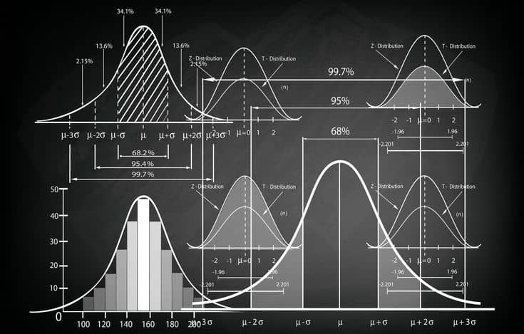

L'art de prendre des décisions éclairées à partir de données limitées.
Préparez-vous à analyser, tracer et conclure.

L2 - Analyse de donnéesDonnées : Notes de 20 étudiants : 8, 9, 10, 10, 11, 11, 11, 12, 12, 12, 12, 13, 13, 14, 14, 15, 15, 16, 17, 18.
L'ogive est une courbe qui représente les effectifs cumulés. Elle permet de visualiser facilement la médiane.
Voici les différences fondamentales entre les tests que nous avons étudiés :
Énoncé : Un fabricant affirme que ses ampoules durent en moyenne 1200 heures. Un échantillon de 100 ampoules donne une moyenne de 1180 heures avec un écart-type de 100 heures.
Question : Au seuil de 5%, le fabricant a-t-il raison ? (Z critique = 1.96).
Corrigé : Z = (1180 - 1200) / (100 / √100) = -20 / 10 = -2.0. |Z| = 2.0. Comme 2.0 > 1.96, on rejette l'hypothèse nulle. Le fabricant a tort.
Énoncé : On veut savoir si la note moyenne des étudiants en L2 est supérieure à 12/20. Un échantillon de 10 étudiants (n=10) donne une moyenne de 13.5 et un écart-type de 2.5.
Question : Au seuil de 5%, peut-on affirmer que la moyenne est supérieure à 12 ? (t critique pour 9 ddl = 1.83).
Corrigé : t = (13.5 - 12) / (2.5 / √10) = 1.5 / 0.79 ≈ 1.90. 1.90 > 1.83, on rejette H₀. La moyenne est supérieure à 12.
Énoncé : On interroge 100 personnes sur leur genre (Homme/Femme) et leur sport préféré (Foot/Basket). Résultats : 30 H Foot, 20 H Basket, 15 F Foot, 35 F Basket.
Question : Y a-t-il un lien entre le genre et le sport préféré ? (χ² critique pour 1 ddl = 3.84).
Corrigé : χ² calculé = 10.55. 10.55 > 3.84, on rejette H₀. Le genre et le sport sont dépendants.
Énoncé : Les notes à un examen suivent une Loi Normale de moyenne 10 et d'écart-type 2. Quel est le pourcentage d'étudiants ayant obtenu une note entre 8 et 12 ? (Aire sous la courbe pour Z entre -1 et 1).
Corrigé : Z1 = (8-10)/2 = -1. Z2 = (12-10)/2 = 1. L'aire entre -1 et 1 est de 68.26%. Donc 68.26% des étudiants ont une note entre 8 et 12.
Énoncé : Un sondage sur 500 personnes indique que 55% sont favorables à un projet. Quel est l'intervalle de confiance à 95% de cette proportion ? (Z = 1.96).
Corrigé : IC = 0.55 ± 1.96 * √(0.55 * 0.45 / 500) = 0.55 ± 0.043. L'intervalle est [50.7% ; 59.3%].
La statistique inférentielle est la science de la décision. Grâce à ce cours, j'ai appris que les données ne sont pas juste des chiffres. Ce sont des preuves qui, lorsqu'elles sont analysées correctement, nous permettent de prendre des décisions éclairées et de comprendre le monde qui nous entoure.